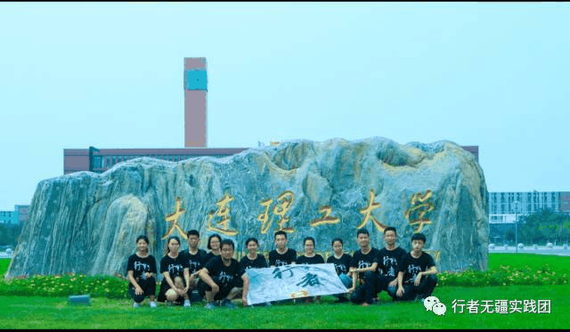
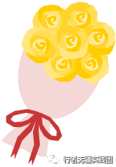
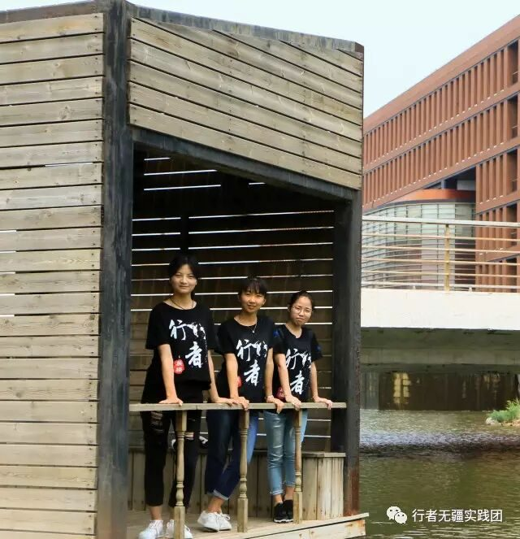
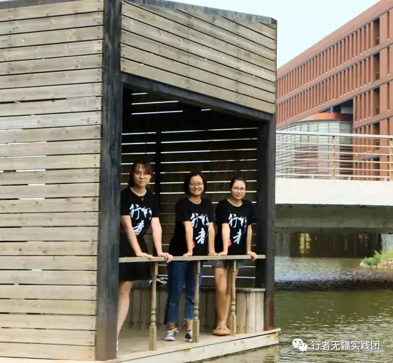
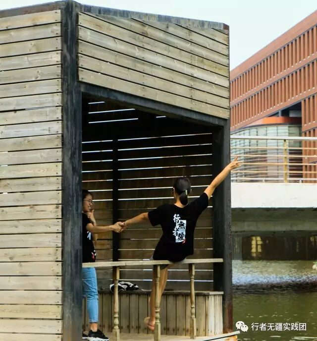
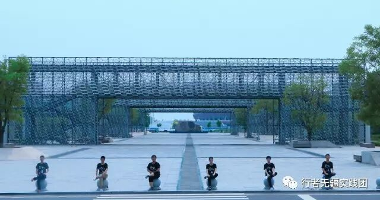
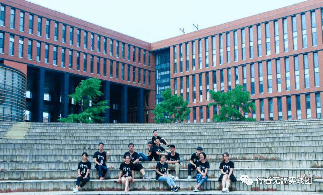

行者无疆#前奏#

行者无疆——河南之行——出发
我们相遇是在六月，初夏的味道里混合着泥土和野花初绽的芳香，一场河南文化调研之行悄然进行。我们规划路线，分配任务，彼此熟知。而出发的这一天，也在默默的小期待中到来了。

行者独步于遥远的旷野， 素昧平生的未知，遭遇处处的难题， 只因为一个执着的信任， 敢于把世界上任何一片土地都放在脚下，为后来人度步出一往无垠的疆土。
——余秋雨

与 君 弹 做 天 籁 曲
行 遍 天 涯 谁 知 音




怡然自得的是心境，洒脱自在的是人生
一场文化苦旅
十三个心怀同一个梦想的我们
中原河洛，三商文化
诗词文字，美食功夫
豫州大地，我们来了！

责编|彭博
审核|章静


长按识别二维码关注我们